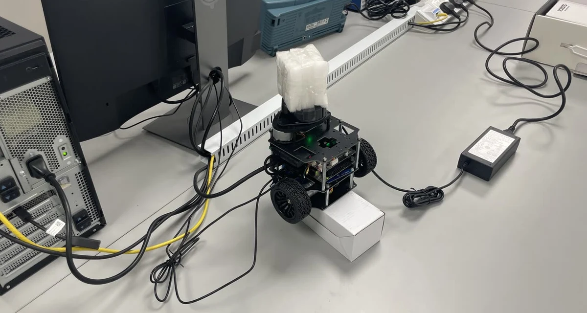
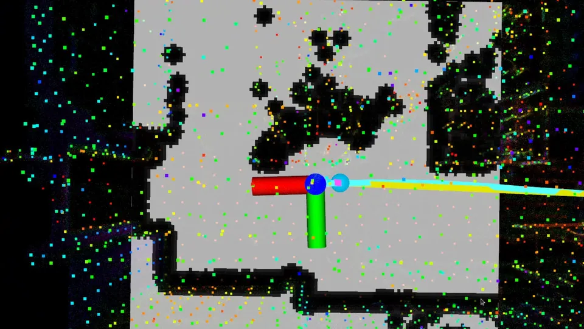
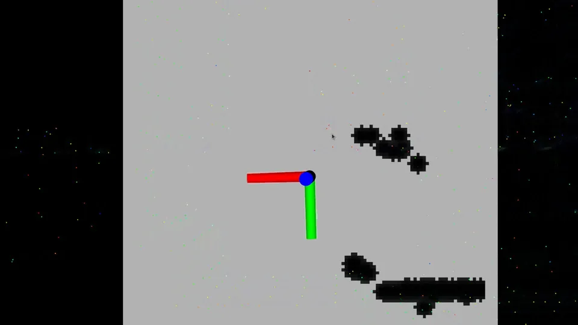
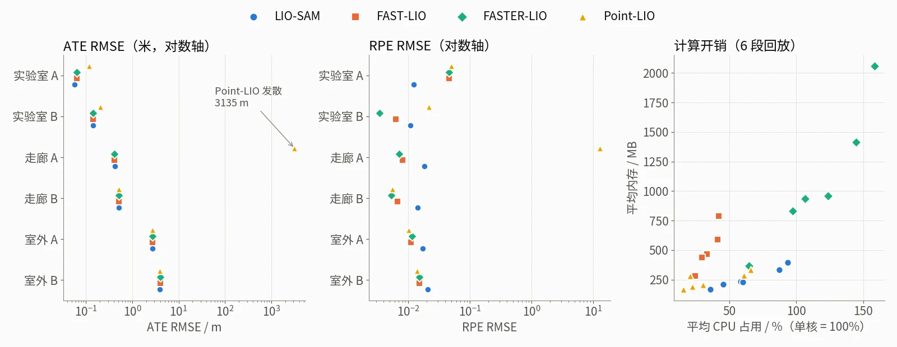
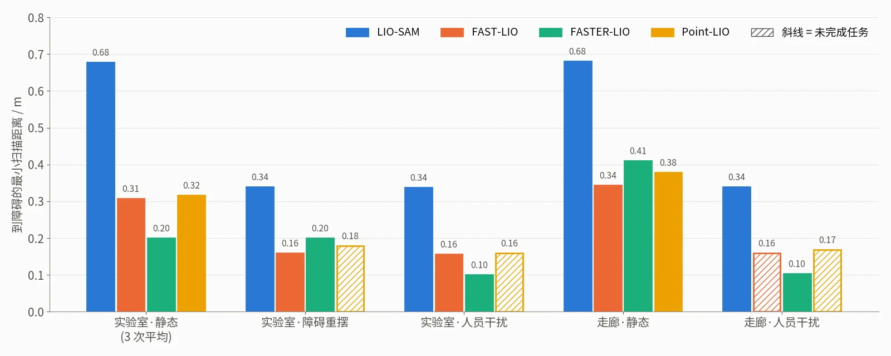

SLAM Navigation Benchmark
在同一台 TurtleBot3 小车上，把四种开源激光惯性 SLAM（用激光雷达和 IMU 同时定位、建图）接进同一套 ROS 导航栈，先用同一批录包比轨迹精度和算力，再在实验室和走廊里比真实导航与避障。结论：轨迹误差排名预测不了导航表现，SLAM 交给导航的是哪一路点云、在哪个坐标系，同样决定避障。

- 同一规划参数下到障碍的最小距离差（0.678 vs 0.200 m）
- 3 倍
- 对比的激光惯性 SLAM
- 4 种
- 问题
- 四种开源激光惯性 SLAM 接到同一套导航上，表现差在哪里、为什么
- 我做的
- 新加坡国立大学硕士毕业项目，独立完成：平台搭建与传感器适配、统一导航接口、录包与切换脚本、评测工具、全部实验和报告
- 技术栈
- ROS Noetic · move_base · DWA · costmap_2d · pointcloud_to_laserscan · evo
- 实验规模
- 4 种算法；3 个场景 6 段离线回放；实验室与走廊 5 组在线导航实验
- 关键发现
- 规划参数一行不改，四种 SLAM 下到障碍的最小距离能差 3 倍（0.678 m 对 0.200 m）。差别来自 SLAM 交给导航的点云：太稀或坐标系不对，障碍就进不了代价地图。
- 结论
- LIO-SAM 整体最稳健；FAST-LIO 效率和导航质量最均衡；FASTER-LIO 能完成任务但离障碍最近；Point-LIO 在线导航最不稳定。
方法一览
| 算法 | 全称 / 核心做法 | 本项目中的输出频率 | 出处 |
|---|---|---|---|
| LIO-SAM | LiDAR Inertial Odometry via Smoothing and Mapping。因子图平滑：把 IMU 预积分、激光里程计和回环约束放进同一张图联合优化。 | IMU 预积分里程计约 200 Hz；建图优化约 5.2 Hz | Shan 等，IROS 2020 |
| FAST-LIO | 本项目用的是 FAST-LIO2。迭代扩展卡尔曼滤波，原始点直接和地图配准，不提特征；地图存在增量 kd 树（ikd-Tree）里。 | 约 10 Hz | Xu 等，T-RO 2022 |
| Point-LIO | 逐点更新：每来一个激光点就更新一次状态，带宽高，面向剧烈运动。 | 约 10 Hz | He 等，AIS 2023 |
| FASTER-LIO | 沿用 FAST-LIO2 的滤波框架，把 kd 树换成并行稀疏增量体素（iVox），减少近邻查询开销。 | 约 10 Hz | Bai 等，RA-L 2022 |
| 名称 | 是什么 | 本项目里的作用 |
|---|---|---|
| move_base | ROS 1 标准导航框架：全局规划器 + 局部规划器 + 恢复行为 | 接收航点，输出速度指令 |
| 代价地图（costmap_2d） | 二维栅格，每格存“靠近障碍的代价”；障碍层由激光标记，膨胀层向外扩出安全带 | 局部规划判断哪里能走 |
| DWA（Dynamic Window Approach，动态窗口法） | 在机器人当前可达的速度范围里采样，对每组速度前向模拟一段轨迹，按贴合路径、接近目标、远离障碍打分 | 局部避障规划器（DWAPlannerROS） |
| pointcloud_to_laserscan | 把三维点云中某个高度区间的点压成一圈二维激光 | 把 SLAM 点云变成代价地图能吃的 /scan |
| TF | ROS 的坐标变换树，记录 map、odom、base_link 等坐标系之间的关系 | 点云和位姿在同一坐标系下才能叠到地图上 |
| ATE（绝对轨迹误差） | 两条轨迹对齐后，逐点位置误差的均方根（RMSE） | 衡量整体漂移 |
| RPE（相对位姿误差） | 固定间隔内的相对运动误差的均方根 | 衡量局部一致性，不受早期漂移累积影响 |
| evo | 开源轨迹评测工具，读 TUM 格式轨迹（时间戳 + 位置 + 四元数） | 计算 ATE / RPE |
平台与约束
实验室只有一台 TurtleBot3 差速底盘，所有对比都在这一台车上做。车上的树莓派 3 只跑底盘通信和传感器驱动，SLAM、可视化和批量评测放在外部工作站上，两边用 ROS 多机配置连起来。
- 编译会把树莓派拖死。并行编译耗尽内存后整机无响应，只能降低编译并行度，必要时临时加大 swap。
- MID360 要做格式适配。四种算法对 IMU 维度、点云消息格式的假设不同，有的还需要雷达不提供的 ring（线号）字段。LIO-SAM 单独为这颗 IMU 配了一套参数。
- 装好后只能远程操作。雷达和线缆装上后，日常操作改为 SSH，网线连接的稳定性直接决定实验能不能连续做。
统一导航接口
四种算法输出的里程计话题、点云话题和 TF 树都不一样。如果各自直接接导航，比出来的差异说不清是算法的还是接法的。做法是固定导航这一侧：导航只读 /slam/odom 和 /slam/cloud_registered 两个话题，机体坐标统一为 base_link，全局坐标链统一为 map → odom → base_link。每种算法用 topic_tools relay 把选定的原生输出转发到这两个话题。
| 算法 | 里程计 | 点云 | 为什么选这一路 |
|---|---|---|---|
| LIO-SAM | /odometry/imu | /lio_sam/mapping/cloud_registered_raw | IMU 里程计频率最高；曾尝试改为雷达坐标系对齐，最终保留更稳定的 base_link 配置 |
| FAST-LIO | /Odometry | /cloud_registered | 配置里显式设了 map_frame=map、body_frame=base_link |
| Point-LIO | /aft_mapped_to_init | /cloud_registered_body | 机体系点云，省掉 map → base_link 的重变换延迟（需开 scan_bodyframe_pub_en） |
| FASTER-LIO | /Odometry | /cloud_registered_body | 同上，机体系点云更适合近场障碍提取 |
避障走的是一条固定链路：
- SLAM 点云relay 到 /slam/cloud_registered
- 转激光base_link 下 −0.1～2.0 m 高度的点压成 0.5° 一束的 /scan
- 代价地图障碍层标记 + 0.15 m 膨胀，DWA 绕行
大部分调试时间花在这条链路上，而不是 SLAM 本身。好几次后端运行正常、轨迹看着也对，局部代价地图却没有更新：点云太稀，或者发在错误的坐标系里，转成二维激光后障碍就丢了。所以这里的“公平”不是四种算法输出完全一样，而是同一台车、同一张图、同一套规划参数和航点，加上每种算法的桥接选择有记录、有理由。


实验流程与参数
- 录包。统一的录包 launch 同时记录雷达、IMU、轮式里程计和 TF。键盘遥控的阶跃指令先经过 50 Hz 的平滑节点（加速限幅 0.15 m/s²、0.40 rad/s²，减速限幅为其 2 倍）再给底盘，减少冲击和晃动。早期有一次录的包只有雷达、IMU 和静态 TF，没有参考里程计，ATE/RPE 根本算不出来；之后录包前先检查参考话题。
- 一键切换。一条脚本按名字启动指定 SLAM、建两条 relay、起导航。每次启动前先清理残留的 launch、relay 和导航进程，避免重复 TF 树和代价地图告警造成假失败。
- 离线评测。同一段包依次回放给四种算法，导出 TUM 格式轨迹，用 evo 算 ATE/RPE；同时按进程采样 CPU 和内存，并记录里程计的输出间隔。
- 航点评测。评测器读 map 坐标系下的航点文件依次发目标（单个目标超时 90 s），记录成功率、用时、路程、到障碍的最小扫描距离、险些碰撞次数、恢复次数、停车时长和 CPU/GPU。可以自动把起点追加为最后一个目标，测回到起点的误差。
- 建图复用。把保存的三维 PCD 点云地图转成二维占据栅格，不覆盖作为基线的默认地图。
| 模块 | 参数 | 取值 |
|---|---|---|
| 局部代价地图 | 滚动窗口 / 分辨率 / 更新频率 | 6×6 m / 0.05 m / 10 Hz |
| 代价地图 | 机器人足迹 / 膨胀半径 | 0.14×0.20 m / 0.15 m |
| 障碍层 | 标记距离 / 清除距离 | 3.5 m / 4.0 m |
| DWA | 前向模拟时长 / 线速度采样 / 角速度采样 / 控制频率 | 1.8 s / 15 / 12 / 10 Hz |
| DWA 打分权重 | 贴合路径 / 接近目标 / 远离障碍 | 32 / 24 / 0.01 |
| pointcloud_to_laserscan | 高度区间 / 角分辨率 / 量程 | −0.1～2.0 m / 0.0087 rad / 0.2～30 m |
| move_base | 全局规划频率 / 振荡判定 | 2 Hz / 10 s 内移动不足 0.2 m |
远离障碍的权重只有 0.01，而贴合路径是 32：DWA 基本只排除穿过致命障碍格的轨迹，不会主动拉开距离。所以机器人离障碍多远，主要取决于障碍在代价地图里被画了多厚、多及时，也就是取决于 SLAM 给的点云。这是后面最小距离差 3 倍的直接原因。
离线回放
实验室、走廊、室外三个场景各录两段包，四种算法吃同样的传感器输入。ATE/RPE 的参考是包里的轮式里程计，不是动捕或测绘级真值，只能做相对比较。


| 场景 | 算法 | ATE / m | RPE | CPU | 内存 / MB |
|---|---|---|---|---|---|
| 实验室 | LIO-SAM | 0.099 | 0.0116 | 47.1% | 201 |
| 实验室 | FAST-LIO | 0.103 | 0.0262 | 28.8% | 379 |
| 实验室 | FASTER-LIO | 0.104 | 0.0245 | 94.2% | 665 |
| 实验室 | Point-LIO | 0.161 | 0.0354 | 23.1% | 187 |
| 走廊 | LIO-SAM | 0.466 | 0.0162 | 49.7% | 219 |
| 走廊 | FAST-LIO | 0.458 | 0.0074 | 29.8% | 453 |
| 走廊 | FASTER-LIO | 0.460 | 0.0062 | 101.0% | 882 |
| 走廊 | Point-LIO | 1567.9 | 6.35 | 20.3% | 236 |
| 室外 | LIO-SAM | 3.318 | 0.0189 | 90.4% | 364 |
| 室外 | FAST-LIO | 3.349 | 0.0130 | 41.6% | 689 |
| 室外 | FASTER-LIO | 3.343 | 0.0133 | 151.7% | 1737 |
| 室外 | Point-LIO | 3.340 | 0.0121 | 63.3% | 309 |
- 实验室：LIO-SAM 两段的 ATE 都最低；FAST-LIO 只差 4 mm，CPU 低 18 个百分点；FASTER-LIO 精度与 FAST-LIO 相当，CPU 是它的 3.3 倍、内存 1.8 倍；Point-LIO 最省也最不准。
- 走廊：单次结果不可靠。走廊 A 里 Point-LIO 发散，ATE 3135 m、RPE 12.7，比其他三种高出几个数量级；走廊 B 它又回到同一水平（ATE 0.511 m）。FAST-LIO 与 FASTER-LIO 的 RPE 最低。
- 室外：四种的 ATE 都在 2.70～3.99 m 且彼此相差不到 0.06 m，差别只体现在 RPE 和开销上；FASTER-LIO 的内存最高到 2057 MB。
- “帧间隔”不是处理耗时。评测记录的是里程计两次输出的间隔：LIO-SAM 为 0.005 s，因为它桥接的是 200 Hz 的 IMU 里程计；其余三种都是 0.1 s，即 10 Hz 雷达帧率。这一列反映输出频率，不能拿来比算法快慢。
在线导航与避障
在线实验只在实验室和走廊做。室外有坡、轮子打滑，轮胎也明显磨损，轮式里程计已经不可靠，在线对比不再公平，室外只保留离线回放。

| 实验 | 路线 | 扰动 | 次数 |
|---|---|---|---|
| 实验室 · 静态 | 2 个前进目标 + 自动回起点 | 无 | 每种 3 次 |
| 实验室 · 障碍重摆 | 4 个目标 + 回起点 | 第 2 段放入障碍，第 3 段再改布局，回程前撤掉 | 每种 1 次 |
| 实验室 · 人员干扰 | 1 个前进目标 | 操作者 5 次走进路线，每次留出绕行空间 | 每种 1 次 |
| 走廊 · 静态 | 走廊尽头 + 回起点 | 无 | 每种 1 次 |
| 走廊 · 人员干扰 | 走廊尽头 | 操作者反复走进路线，留出绕行空间 | 每种 1 次 |


| 实验 | 算法 | 成功率 | 用时 / s | 路程 / m | 最小距离 / m | 险些碰撞 | 回起点误差 / m |
|---|---|---|---|---|---|---|---|
| 实验室 · 静态 | LIO-SAM | 100% | 95.9 | 19.54 | 0.678 | 0 | 0.045 |
| 实验室 · 静态 | FAST-LIO | 100% | 94.8 | 19.76 | 0.307 | 0 | 0.055 |
| 实验室 · 静态 | FASTER-LIO | 100% | 96.5 | 19.53 | 0.200 | 5 | 0.043 |
| 实验室 · 静态 | Point-LIO | 100% | 86.4 | 19.40 | 0.316 | 0 | 0.043 |
| 实验室 · 障碍重摆 | LIO-SAM | 5/5 | 133.3 | 30.05 | 0.339 | 0 | 0.070 |
| 实验室 · 障碍重摆 | FAST-LIO | 5/5 | 132.4 | 30.10 | 0.160 | 0 | 0.090 |
| 实验室 · 障碍重摆 | FASTER-LIO | 5/5 | 129.7 | 29.71 | 0.200 | 15 | 0.074 |
| 实验室 · 障碍重摆 | Point-LIO | 1/5 | 69.9 | 15.29 | 0.179 | 0 | 7.485 |
| 实验室 · 人员干扰 | LIO-SAM | 成功 | 40.7 | 9.67 | 0.338 | — | — |
| 实验室 · 人员干扰 | FAST-LIO | 成功 | 40.9 | 9.74 | 0.156 | — | — |
| 实验室 · 人员干扰 | FASTER-LIO | 成功 | 41.2 | 9.72 | 0.100 | — | — |
| 实验室 · 人员干扰 | Point-LIO | 超时 | 150.1 | 9.24 | 0.159 | — | — |
| 走廊 · 静态 | LIO-SAM | 100% | 143.9 | 34.15 | 0.680 | 0 | 0.108 |
| 走廊 · 静态 | FAST-LIO | 100% | 143.0 | 34.19 | 0.344 | 0 | 0.085 |
| 走廊 · 静态 | FASTER-LIO | 100% | 144.4 | 34.08 | 0.410 | 0 | 0.096 |
| 走廊 · 静态 | Point-LIO | 100% | 146.8 | 34.16 | 0.379 | 0 | 0.100 |
| 走廊 · 人员干扰 | LIO-SAM | 成功 | 73.0 | 17.32 | 0.339 | — | — |
| 走廊 · 人员干扰 | FAST-LIO | 未到 | 43.6 | 10.35 | 0.160 | 0 | — |
| 走廊 · 人员干扰 | FASTER-LIO | 成功 | 72.3 | 17.29 | 0.103 | 2 | — |
| 走廊 · 人员干扰 | Point-LIO | 未到 | 53.0 | 8.23 | 0.169 | — | — |
- 静态布局下都能走完，差在余量。两组静态实验四种都 100% 成功，用时最多相差约 12%。LIO-SAM 的最小距离（0.678 / 0.680 m）是其他算法的 1.7～3.4 倍；FASTER-LIO 在实验室只有 0.200 m，平均每次 5 次险些碰撞。
- 障碍一变，Point-LIO 先掉队。障碍重摆时它只到达第 1 个目标，回起点误差 7.485 m。FASTER-LIO 用时最短，但有 15 次险些碰撞。
- 人员干扰下分出两种失败。实验室里成功的三种都在 41 s 左右到达；Point-LIO 约 150 s 的运行中停了 117.7 s，触发 2 次恢复。走廊更窄，只剩 LIO-SAM 和 FASTER-LIO 到达：FAST-LIO 是保守失败，停在目标前，没有恢复、没有险些碰撞；Point-LIO 平均速度只有 0.155 m/s，又触发 2 次恢复。
规划参数一行没改，行为却明显不同：规划器只能对它收到的位姿和障碍观测做反应，所以要比较的是从感知到规划的整条链路，而不是孤立的估计器。
局限与下一步
- 没有外部真值。离线 ATE/RPE 以轮式里程计为参考，只能做相对比较，不能当作绝对精度。
- 走廊样本少。实验室静态布局重复了 3 次，其余每组每种算法只跑了一次。下一步先补走廊的重复实验。
- Point-LIO 的结果和接法有关。它在线表现最差，但这是当前桥接配置下的结果，不能直接说算法本身不行。
- 动态避障还有调参空间。远离障碍的权重 0.01 几乎不起作用，下一步细化导航参数和机器人外形建模；室外在线对比要等轮子和里程计状况改善后再做。